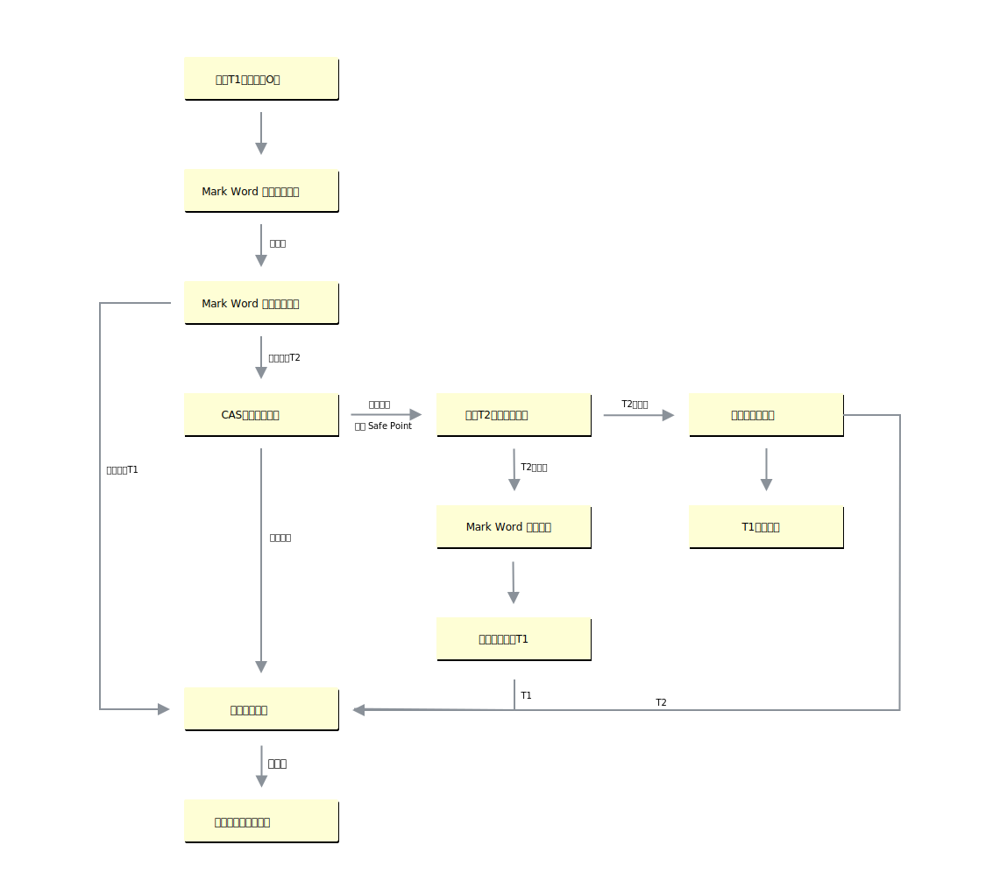
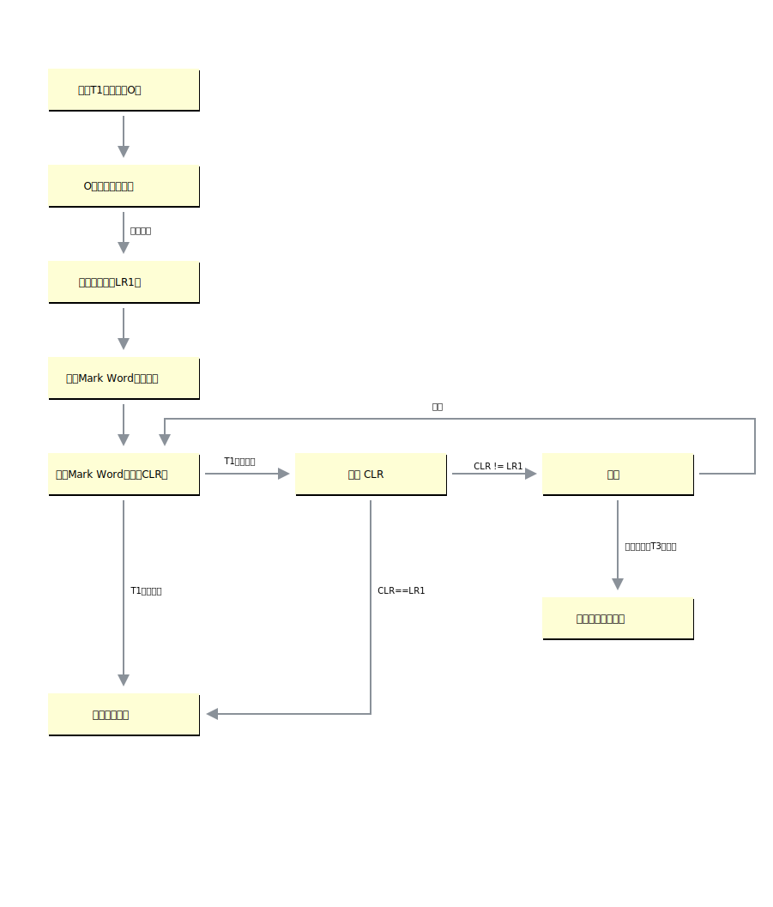
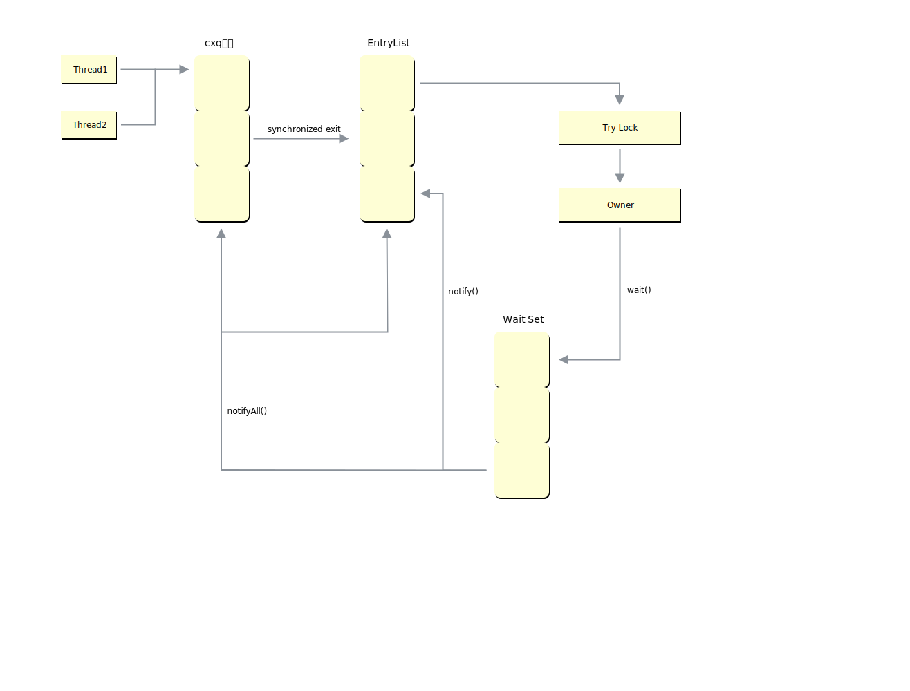

Synchronized原理
基础
在多线程并发编程中 Synchronized 一直是元老级角色，很多人都会称呼它为重量级锁，但是随着 Java SE1.6 对 Synchronized 进行了各种优化，引入了 偏向锁 和 轻量级锁。所以在 Java SE1.6 里锁一共有四种状态，无锁状态，偏向锁状态，轻量级锁状态和重量级锁状态，它会随着竞争情况逐渐升级。锁可以升级但不能降级，意味着偏向锁升级成轻量级锁后不能降级成偏向锁，但是偏向锁状态可以被重置为无锁状态（锁撤销）。这种锁升级却不能降级的策略，目的是为了提高获得锁和释放锁的效率。
| 锁状态 | 优点 | 缺点 | 适用场景 |
|---|---|---|---|
| 偏向锁 | 加锁、解锁无额外消耗，和非同步方式近似 | 如果竞争线程多，会有额外锁撤销的消耗 | 基本没有线程竞争的场景 |
| 轻量级锁 | 竞争线程不会阻塞，使用自旋等待 | 如果长时间不能获取锁，会消耗CPU | 少量线程竞争，且线程持有锁时间不长 |
| 重量级锁 | 竞争线程被阻塞，减少CPU空转 | 线程阻塞，响应时间长 | 很多线程竞争，锁持有时间长 |
Java中的每一个对象都可以作为锁。
- 对于同步方法，锁是当前实例对象。
- 对于静态同步方法，锁是当前对象的Class对象。
- 对于同步方法块，锁是
Synchonized括号里配置的对象。
当一个线程试图访问同步代码块时，它首先必须得到锁，退出或抛出异常时必须释放锁。
锁的升级
目前锁一共有4种状态，级别从低到高依次是：无锁、偏向锁、轻量级锁和重量级锁。锁状态只能升级不能降级。
偏向锁
大多数情况下，锁不仅不存在多线程竞争，而且总是由同一线程多次获得。偏向锁是为了在只有一个线程执行同步块时提高性能。

轻量级锁

这里解释下其中几个重要的步骤：
- 复制 Mark Word 到锁记录：拷贝对象头中的 Mark Word 到锁记录中。
- 更新 Mark Word 指针：拷贝成功后，虚拟机将使用 CAS 操作尝试将对象的 Mark Word 更新为指向 Lock Record 指针，并将 Lock Record 里的 owner 指针指向对象的 Mark Word。
重量级锁
在重量级锁的状态下， JVM 基于进入和退出 Monitor 对象来实现方法同步和代码块同步，Monitor 的引用存储在对象头中。
Monitor 本身是依赖与操作系统的互斥锁（mutex lock）实现的。由于 JVM 线程是映射到操作系统的原生线程之上的，如果要阻塞或唤醒一条线程，都需要操作系统来帮忙完成，这就需要从用户态转换到核心态中，因此这种转换需要耗费很多的 CPU 时间。

锁粗化
同步块的作用范围应该尽可能小，仅在共享数据的实际作用域中才进行同步，这样做的目的是为了使需要同步的操作数量尽可能缩小，缩短阻塞时间，如果存在锁竞争，那么等待锁的线程也能尽快拿到锁。
但是加锁解锁也需要消耗资源，如果存在一系列的连续加锁解锁操作，可能会导致不必要的性能损耗。 锁粗化就是JVM将多个连续的加锁、解锁操作连接在一起，扩展成一个范围更大的锁，避免频繁的加锁解锁操作。
锁消除
Java虚拟机在JIT编译时(可以简单理解为当某段代码即将第一次被执行时进行编译，又称即时编译)，通过对运行上下文的扫描，经过逃逸分析，去除不可能存在共享资源竞争的锁，通过这种方式消除没有必要的锁，可以节省毫无意义的请求锁时间